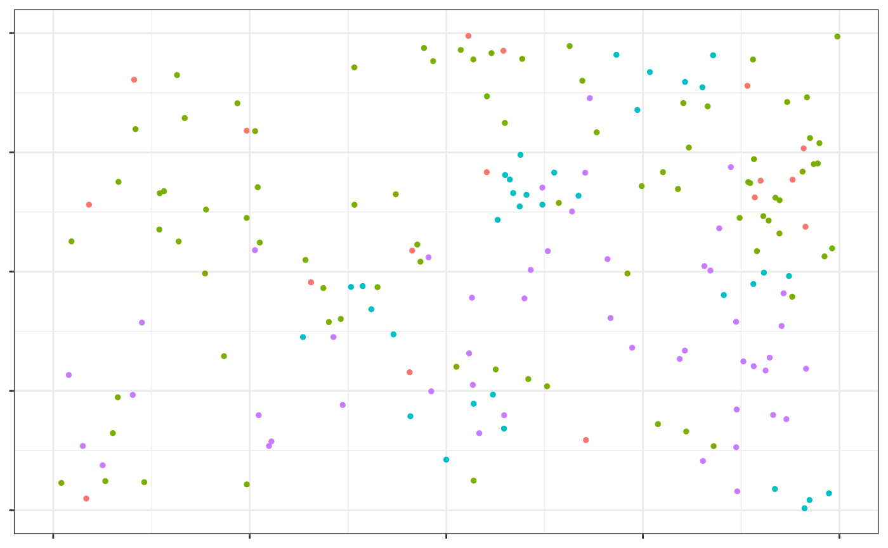
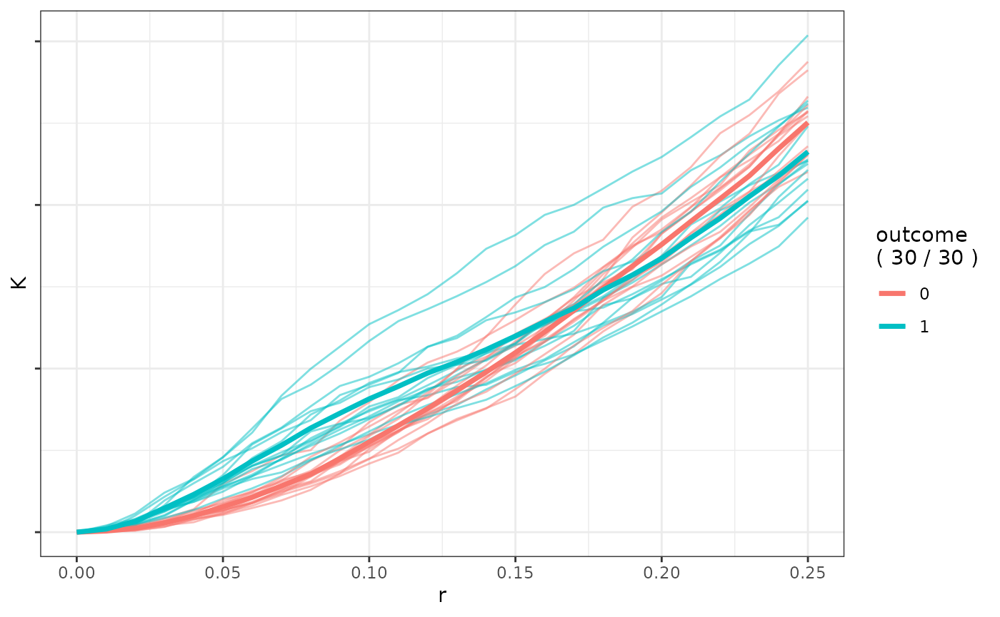

Overview
This documents a sample view of funkycells. Every
function will be examined throughout this vignette, feel free to see the
process from beginning to end or jumping to a given step in the
document. Although each step in the funkycells process is
addressed, detailed information on each function is left to their
respective documentation.
Data
This package is interested in investigating spatial data. Although potentially combined, in the most raw form the data of interest would be (1) cell information (locations, patient, image, etc.) and (2) meta-data (patient demographics, etc.).
Rather than loading in data, we will generate data with such
properties. The cell data is constructed using
simulatePP(), as given below.
set.seed(123)
cell_data <- simulatePP(
cellVarData =
data.frame(
"stage" = c(0, 1),
"A" = c(0, 0),
"B" = c(1 / 100, 1 / 500),
"C" = c(1 / 500, 1 / 250),
"D" = c(1 / 100, 1 / 100)
),
cellKappaData =
data.frame(
"cell" = c("A", "B", "C", "D"),
"clusterCell" = c(NA, "A", NA, NA),
"kappa" = c(20, 5, 15, 15)
),
peoplePerStage = 40,
imagesPerPerson = 1,
silent = FALSE
)
#> Stage: 0 (1/2)
#> Stage: 1 (2/2)We look at some pictures using plotPP().
plotPP(cell_data[cell_data$Image == 1, c("x", "y", "cellType")],
dropAxes = TRUE,
colorGuide = "none",
xlim = c(0, 1),
ylim = c(0, 1)
)
In funkycells we often explain the cell interactions using \(K\) functions, although many functions are feasible. For example, K functions could be computed as the following function.
k_data <- getKFunction(
data = cell_data[cell_data$Person == "p1", -1],
agents = c("A", "A"),
unit = "Person",
repeatedUniqueId = "Image",
rCheckVals = seq(0, 0.25, 0.01),
xRange = c(0, 1),
yRange = c(0, 1)
)However, funkyModel() does not use functions directly,
but the principle components of functions. Because of the commonness of
\(K\) functions, currently we
implemented the steps in the same function1. Although in our data,
the cellTypes are in a single column, the functions accepts when the
cell properties are defined in many columns (see documentation on
getKsPCAData()). We also note that we only consider
one-direction of the interactions to reduce variables and improve model
power.
cells <- unique(cell_data$cellType)
cells_interactions <- rbind(
data.frame(t(combn(cells, 2))),
data.frame("X1" = cells, "X2" = cells)
)
pca_data <- getKsPCAData(
data = cell_data,
outcome = "Stage",
unit = "Person",
repeatedUniqueId = "Image",
rCheckVals = seq(0, 0.25, 0.01),
agents_df = cells_interactions,
xRange = c(0, 1), yRange = c(0, 1),
nPCs = 3
)
#> PCA Pairs (10): 1, 2, 3, 4, 5, 6, 7, 8, 9, 10Upon this data, we attach the meta information. For example, to this data we will add gender (with no effect), and age (with some effect).
set.seed(123)
pcaMeta <- simulateMeta(pca_data,
outcome = "Stage",
metaInfo = data.frame(
"var" = c("gender", "age"),
"rdist" = c("rbinom", "rnorm"),
"Stage_0" = c("0.5", "30"),
"Stage_1" = c("0.5", "31")
)
)Model
We now jump into the model. We use funkyModel() as it
employs cross-validation and permutation to create accurate models.
set.seed(123)
model_fc <- funkyModel(
data = pcaMeta,
outcome = "Stage",
unit = "Person",
metaNames = c("gender", "age")
)The variable importance plot is returned (plot not shown as this was not run for computational reasons).
model_fc$viPlotThe results of the model from funkyModel() also includes
the model from funkyForest() on the original data, which is
necessary when trying to predict new data. Suppose we create a few new
people (i.e. get more data) and wish to predict. This would be done as
follows.
set.seed(12345)
cell_data_pred <- simulatePP(
cellVarData =
data.frame(
"stage" = c(0, 1),
"A" = c(0, 0),
"B" = c(1 / 100, 1 / 500),
"C" = c(1 / 500, 1 / 250),
"D" = c(1 / 100, 1 / 100)
),
cellKappaData =
data.frame(
"cell" = c("A", "B", "C", "D"),
"clusterCell" = c(NA, "A", NA, NA),
"kappa" = c(20, 5, 15, 15)
),
peoplePerStage = 2,
imagesPerPerson = 2,
silent = FALSE
)
pca_data_pred <- getKsPCAData(
data = cell_data_pred,
outcome = "Stage",
unit = "Person",
repeatedUniqueId = "Image",
rCheckVals = seq(0, 0.25, 0.01),
agents_df = cells_interactions,
xRange = c(0, 1), yRange = c(0, 1),
nPCs = 3
)
set.seed(12345)
pcaMeta_pred <- simulateMeta(pca_data_pred,
outcome = "Stage",
metaInfo = data.frame(
"var" = c("gender", "age"),
"rdist" = c("rbinom", "rnorm"),
"Stage_0" = c("0.5", "30"),
"Stage_1" = c("0.5", "31")
)
)
predictions <- predict_funkyForest(model = model_fc$model, data_pred = pcaMeta_pred[-1])Other Investigations
We also can compare K functions by group.
ab_stage0 <- getKFunction(cell_data[cell_data$Stage == 0, -1],
agents = c("A", "B"), unit = "Person",
repeatedUniqueId = "Image",
rCheckVals = seq(0, 0.25, 0.01)
)
ab_stage1 <- getKFunction(cell_data[cell_data$Stage == 1, -1],
agents = c("A", "B"), unit = "Person",
repeatedUniqueId = "Image",
rCheckVals = seq(0, 0.25, 0.01)
)
ab_stage0_long <- tidyr::pivot_longer(data = ab_stage0, cols = K1:K15)
ab_stage1_long <- tidyr::pivot_longer(data = ab_stage1, cols = K1:K15)
data_k_plot <- rbind(
data.frame(
"r" = ab_stage0_long$r,
"K" = ab_stage0_long$value,
"Unit" = ab_stage0_long$name,
"Outcome" = "0"
),
data.frame(
"r" = ab_stage1_long$r,
"K" = ab_stage1_long$value,
"Unit" = paste0(ab_stage1_long$name, "_1"),
"Outcome" = "1"
)
)
plot_K_functions(data_k_plot)
We can also consider ROC curves (Figure may not be shown due to computational reasons).
pred_roc <- predict_funkyForest(
model = model_fc$model,
data_pred = pcaMeta[-2],
data = pcaMeta[-2]
)
computePseudoROCCurves(pcaMeta$Stage, pred_roc$PredPerc[-1])